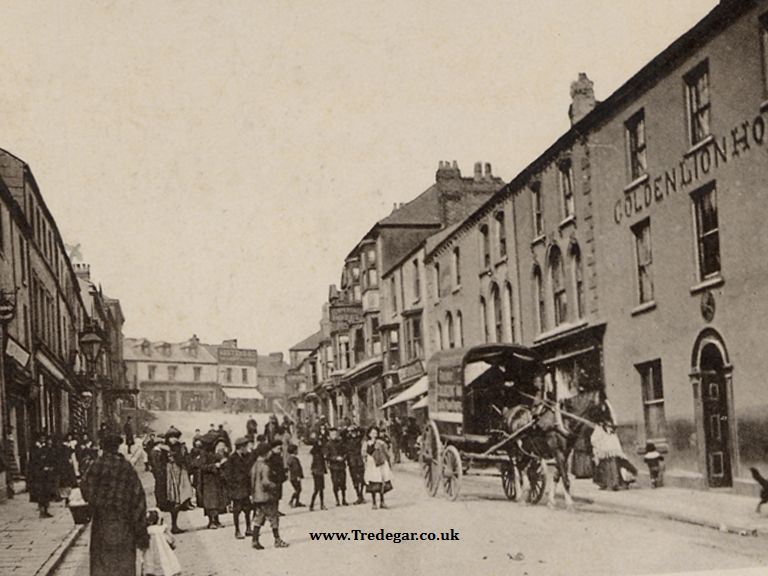
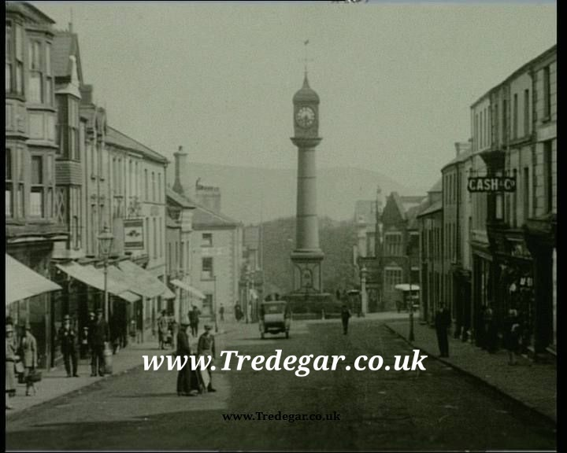

Exploring the industrial genesis, tight-knit communities, and architectural landmarks of our historic town.
The town of Tredegar is geographically and logically divided into several prominent historical districts, each holding its own distinct character within our heritage:
Dukestown • Sirhowy • Georgetown • Trefil • Tafarnaubach
Situated proudly at the head of the Sirhowy Valley, the first true documented evidence of a concentrated population inhabiting the region dates back to 1778. It was during this year that a blast furnace was constructed in the Sirhowy area by industrial pioneers Thomas Atkinson and William Barrow. High-grade stone was pulled from the rugged quarries of Trefil, and coal was extensively mined from the surrounding hillsides. This specific portion of South Wales was remarkably blessed, containing a dense abundance of natural raw materials required to power the Industrial Revolution.
In 1800, construction began on the massive Tredegar Ironworks under the guidance of Matthew Monkhouse, Richard Fothergill, and Samuel Homfray. As the ironworks expanded, an immense influx of workers and families migrated into the valley in search of employment, cementing the infrastructure and birth of the town of Tredegar.


Standing as an enduring emblem of our town's heritage, the magnificent cast-iron clock tower rises seventy-two feet high. Its foundation consists of solid masonry, surmounted by a heavy cast-iron base featuring four structural arms anchoring outwards from each corner to a distance of sixty feet, reaching a depth of five feet and six inches beneath ground level.
The main pillar is composed entirely of cast iron, mounted upon a square pediment which receives a rectangular plinth. Upon this structure stands a cylindrical column of smooth surface and symmetrical diameter, ornamented with suitable coping on which rests the clock assembly, topped with an elegant weather vane.
The rectangular plinth features detailed inscriptions across its four aspects:
• South Side: Presented to the town of Tredegar from the proceeds of a bazaar promoted by the late Mrs. R.P. Davis. Erected in the year 1858.
• West Side: Features the effigy of Wellington, accompanied by the legend: "Wellington, England's Hero".
• North Side: Displays the historic Royal Arms of England.
• East Side: Bears the name and description of the founder along with his personal crest: "Charles Jordan, Iron Founder, Newport, Mon."
Looking for deeper records? Thousands of fully digitized historic documents, rare town photographs, academic white papers, industrial charts, and vintage maps are preserved within our secure back-end environment.
Access Secure Document Portal